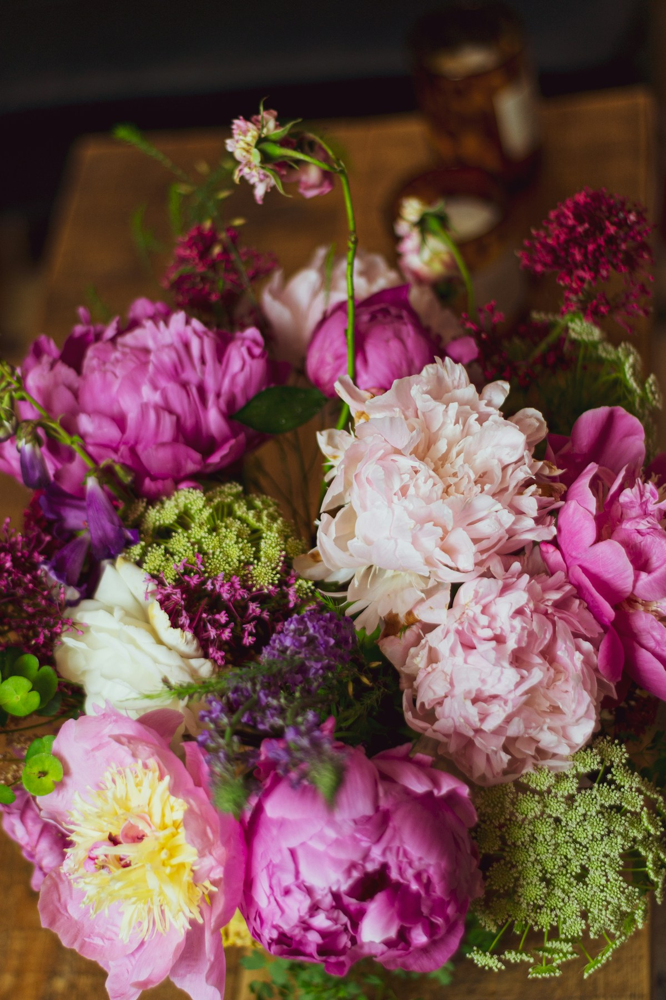

Say it with flowers.
Planning a gift or an arrangement? Call the shop to discuss the occasion, preferred flowers, budget and current availability.
See official contact detailsCustom flowers, thoughtful gifts and wedding designs from a family-owned shop in Vassar.

A clearer path for everyday orders and a little more space for the plans that need a conversation.
Planning a gift or an arrangement? Call the shop to discuss the occasion, preferred flowers, budget and current availability.
See official contact detailsExplore a starting brief for your wedding flowers or decorating plans, with your date, style and priorities together in one place.
Try the wedding plannerStart a conversation about seasonal flowers, colors and the occasion.
Ask about custom designs using faux flowers.
Explore another material for a custom floral design.
A simple enquiry can help Cathy understand your plans before the first conversation.
This preview does not send enquiries, take payment, confirm prices or reserve dates. Use the official business contact details for real orders.
For actual orders, opening hours and current availability, contact the shop directly. These business details come from its public website.